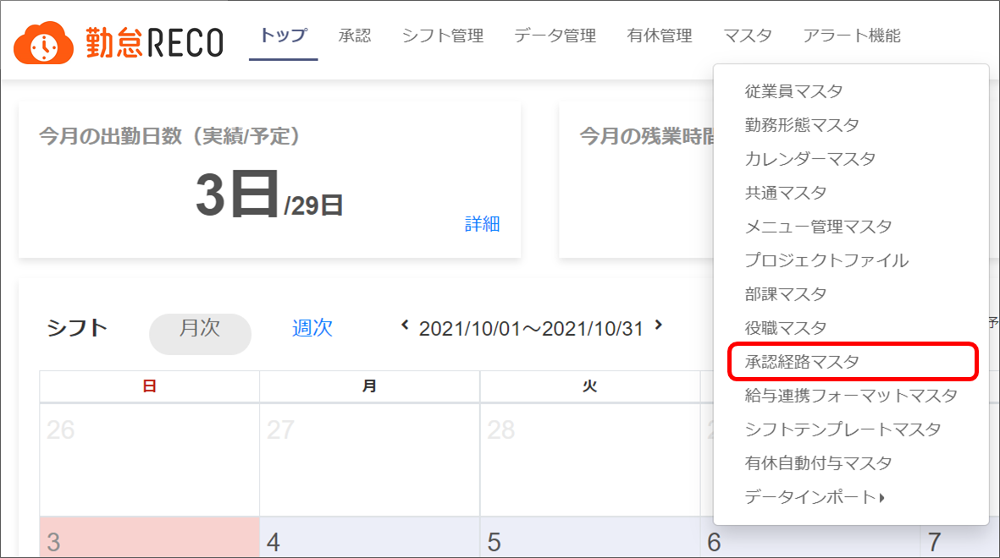
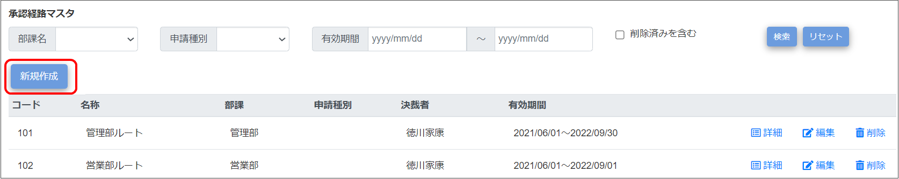
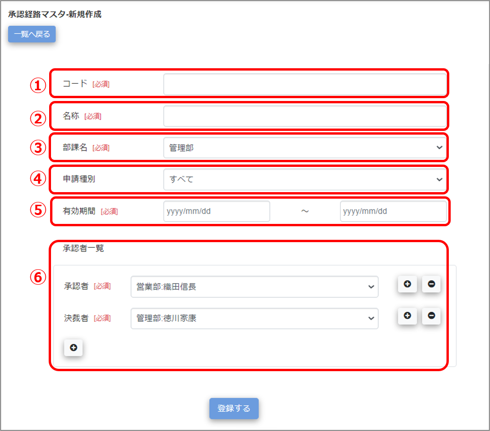
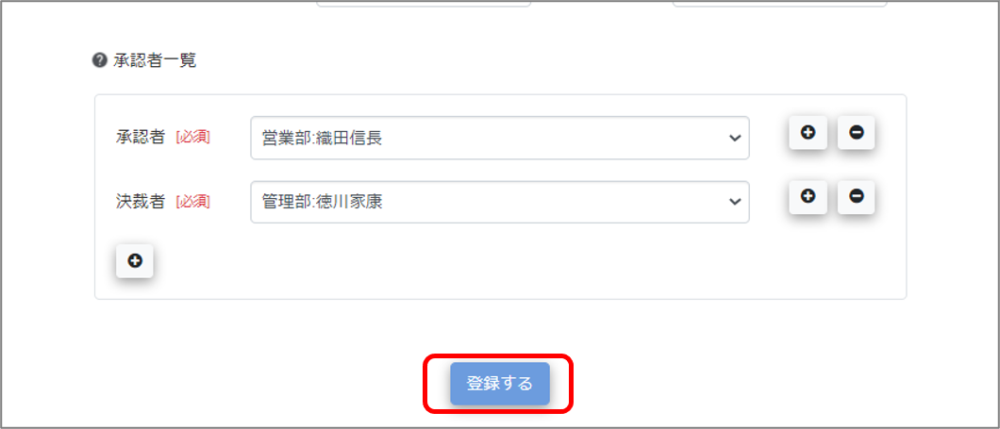
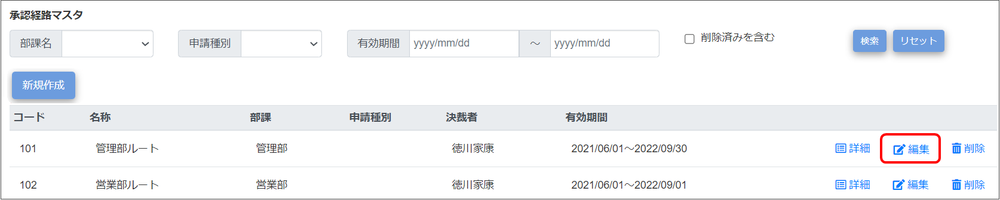
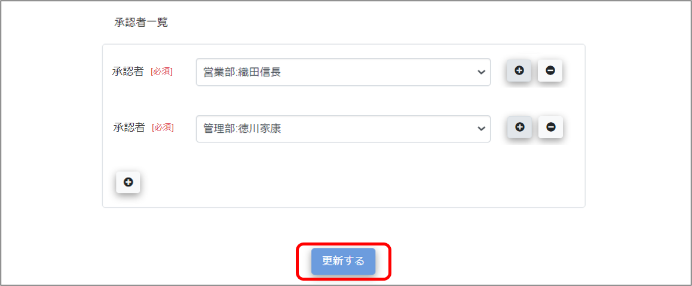

申請承認機能の承認者の登録
申請承認機能（休暇申請、残業申請等）の承認者を登録します。
「共通マスタ」の「申請機能」を「使用する」にした場合に登録が必要です。
登録は［承認経路マスタ］画面で実施します。
ご注意 |
承認経路マスタを操作できるのは、システム管理者アカウントのみです。 |
|---|
 勤怠RECO［管理用］操作マニュアル
勤怠RECO［管理用］操作マニュアル
勤怠RECO［管理用］
操作マニュアル
申請承認機能（休暇申請、残業申請等）の承認者を登録します。
「共通マスタ」の「申請機能」を「使用する」にした場合に登録が必要です。
登録は［承認経路マスタ］画面で実施します。
ご注意 |
承認経路マスタを操作できるのは、システム管理者アカウントのみです。 |
|---|
［マスタ］をクリックし、［承認経路マスタ］をクリックする

「承認経路マスタ」画面が表示されます。
［新規作成］ボタンをクリックする

「承認経路マスタ-新規作成」画面が表示されます。
各項目を入力する

コード
承認経路コードを設定します。設定後の変更はできません。（一意／最大255文字）。
ひとつの部署に対して複数の承認経路を設定した場合は、最も若いコードの承認経路が通常の承認経路になります。
マスタ一覧ではコード順でマスタが表示されます。
名称
承認経路名を設定します（最大255文字）。
部課名
承認経路を設定したい部課名を選択します。
ドロップダウンリストに設定したい部課名が表示されない場合は、「部課マスタ」で設定してください。
申請種別
設定したい承認経路の申請種別を選択します。
有効期間
設定したい承認経路をいつからいつまで使用するかを設定します。次の項目「承認者一覧」で設定する人の従業員マスタで設定した役職の有効期間内で設定してください。
承認者一覧
設定したい承認経路の承認者、決裁者を選択します。部課に関係なく設定できます。選択できるのは、従業員マスタで承認者以上の権限が設定されており、かつ役職が設定されている人のみです。
ドロップダウンリストに承認者が表示されない場合は、従業員マスタの役職名・有効期間開始日・有効期間終了日を確認してください。役職の有効期間を過ぎている場合、その従業員は承認者ドロップダウンリストには表示されません。
また、承認者の権限が「一般」の場合、承認者に設定しても「申請承認」メニューへアクセスできませんのでご注意ください。
承認者を複数設定したい場合は、をクリックして登録してください。承認者を減らす場合は、 をクリックしてください。
［登録する］ボタンをクリックする

画面上部に「登録が完了しました。」とメッセージが表示され、入力した承認経路マスタ情報がマスタデータに登録されます。
［マスタ］をクリックし、［承認経路マスタ］をクリックする
「承認経路マスタ」画面が表示されます。
編集したい承認経路マスタの［編集］をクリックする
削除した承認経路を検索する場合は「削除済みを含む」にチェックを付けます。

ヒント |
|
|---|
「承認経路マスタ-新規作成」画面が表示されます。
変更したい項目を修正する
［更新する］をクリックする

画面上部に「更新が完了しました。」とメッセージが表示され、承認経路マスタの変更情報がマスタデータに登録されます。
削除を元に戻したい場合は、「削除済みを含む」にチェックを付けて検索し、「承認経路マスタ-編集」画面で削除済みチェックを外して登録してください。
ご注意 |
承認経路マスタの承認者を変更しても、既に申請された申請は、変更前の承認者以外が承認することができません。 以前の承認者が退職しており承認できない場合、申請した従業員が「申請編集」画面より「申請取下」を行い、改めて申請しなおしてください。 「申請編集」画面に「申請」ボタンが表示されている場合は、「申請」をクリックすることで承認経路マスタを最新化できますので、「申請取下」せずに「申請」してください。 |
|---|